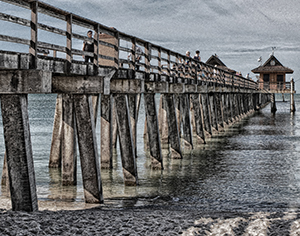

☰
About
Portfolio
Social
Web Resources
Inspiration
Lisa Balbach
Educator, Web Programmer, Designer, Photographer, Digital Artist
Inspirational Work...
Ansel Adams - landscape photographer
John Paul Caponigro - landscape photographer
Jerry Uelsmann - surrealist photographer
Erik Johansson - surrealist photographer
Evgeny Lushpin - photo-realistic paintings
Georgia O'Keeffe
Alice Pasquini - street artist

© Photography by Lisa Balbach